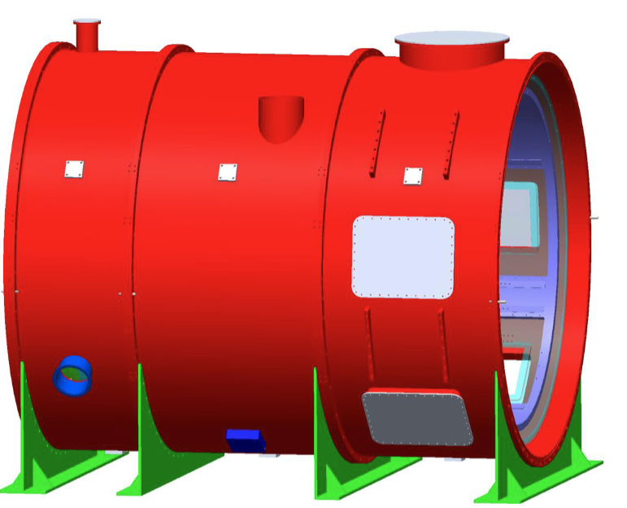
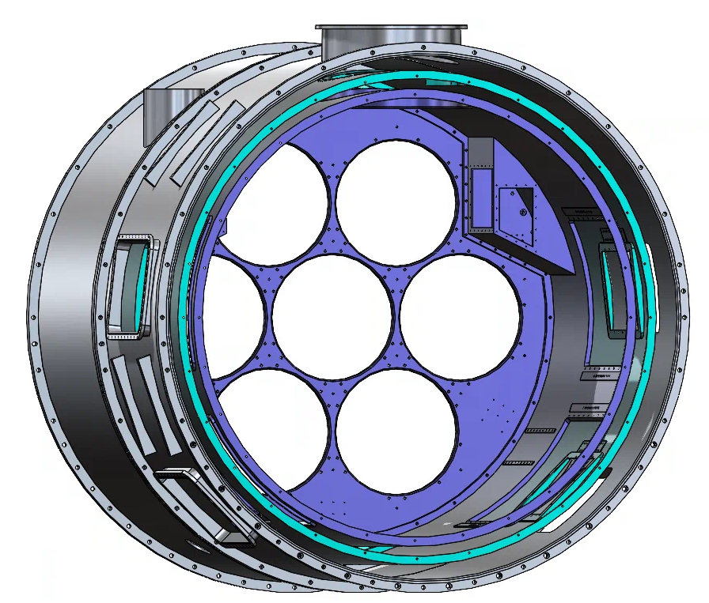
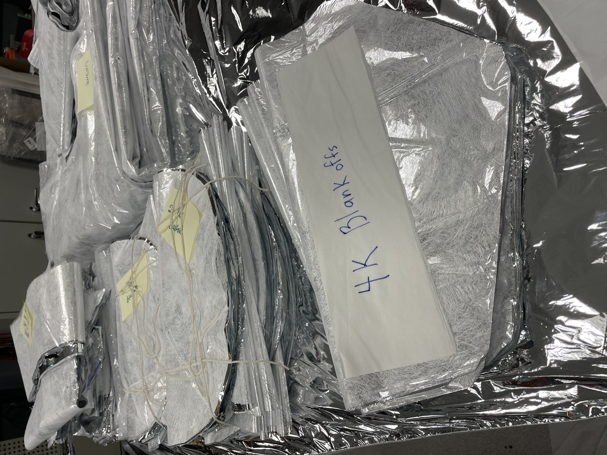
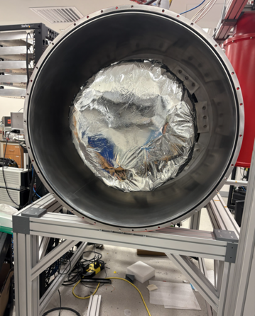

PrimeCam Multi-Layer Insulation Installation
Keywords: Cryogenics | SolidWorks | Multi-Layer Insulation (MLI) | Thermal Management | CCAT Observatory
Introduction to PrimeCam and FYST
The Fred Young Submillimeter Telescope (FYST) is a major international collaboration located on Cerro Chajnantor in the Atacama Desert in Chile. While the observatory is deployed in South America, its primary camera component, PrimeCam, was assembled at Cornell University. Working with the Niemack Group, I collaborated with a cross-functional team to assemble and test this complex hardware.


PrimeCam utilizes state of the art Kinetic-Inductance Detectors (KIDs) that require an extreme base thermal level of less than 100 millikelvin (-273.05°C). To achieve this, the camera relies on multiple cooling units, including two Pulse Tube Cryocoolers and a Dilution Refrigerator. These cooling stages are enclosed within multiple nested vacuum shells, similar to Russian nesting dolls, for each temperature level. To protect each of these highly sensitive inner temperature stages from the thermal radiation emitted by the outer ones, we utilize Multi-Layer Insulation (MLI).
Installation Process & Geometric Modeling
MLI consists of stacks of reflective sheets designed to deflect radiation, with each sheet separated by a thin mesh netting to minimize conductive heat transfer. The standard sheets used in our lab contained 10 layers, and depending on the specific temperature stage being insulated, up to 30 layers of MLI were applied.


Applying this insulation required precise spatial planning. I analyzed the geometry of each individual PrimeCam component in SolidWorks, including the nested shells, front and back plates, and blank-offs, to determine the exact MLI coverage required for each temperature stage. For complex hardware geometries that required precise cutouts or mounting holes, we utilized a soldering iron to melt through the MLI. This technique allowed us to cleanly cut the base shapes while simultaneously fusing the edges of the mesh and reflective layers to prevent fraying.
Implementation and Results
When PrimeCam was finally sealed and cooled down, the thermal data confirmed that there were no issues with the MLI coverage. During the assembly process, any minor rips or tears in the delicate MLI were easily repaired using a specialized reflective tape that functioned identically to the primary reflective layers to ensure no radiation leaked through.
This was my first project when I joined the CCAT/FYST collaboration. It served as an excellent introduction to SolidWorks, a software I would later become highly proficient in for more complex mechanical designs. More importantly, it familiarized me with the larger PrimeCam project as a whole, providing a foundational understanding of the critical importance of thermal insulation and radiation shielding in high-vacuum cryogenic environments.